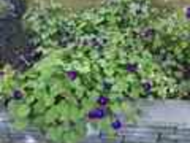

Light & Support
Grow in full sun and provide a trellis, fence, or other support for the vines to climb.
Watering
Water deeply during dry weather, especially while young, but avoid keeping the soil constantly soggy.
Bloom & Cleanup
Flowers open best in bright conditions. Remove unwanted seed pods if you do not want volunteer seedlings the following year.